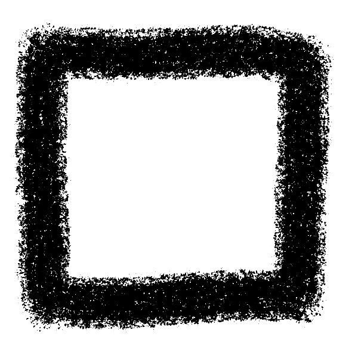

Sobre Adrian Vazquez
Un poco sobre mi
Mi nombre es Adrian Vazquez Cabezas, naci en Reus un 9 de Mayo de 2006 y desde pequeño
siempre me ha interesado la tecnologia, desde los videojuegos que tanto jugaba, hasta el funcionamiento de un ordenador,
esto hizo que cuando estaba apunto de acabar la ESO, decidiera cursar el bachillerato tecnologico debido a que no sabia en que campo
especializarme, cuando acabe este supe que el entorno que mas me interesaba era el de la programacion, decantandome asi por un
superior de programacion de aplicaciones multiplataforma, que estoy cursando ahora.

Conocimientos
En cuanto a lenguajes de programacion, se utilizar Java, PHP, HTML, CSS y SQL. Luego otros que se utilizar aunque
no con tanta confianza son C#, Visual Basic .NET y JavaScript.
Se utilizar algunas entornos de desarrollo como Eclipse, Visual Studio Code, GitHub, HeidiSQL, Visual Studio
2022, ademas de manejarme bien con algunas aplicaciones como son Photoshop, Premiere, Krita, VirtualBox, UML, Blender y Aesprite.

Habiliades
Puedo trabajar tanto en equipo como en solitario, aprendo muy rapido cuando me interesa el tema, me gusta mantener
un ambiente positivo en mi entorno de trabajo y tengo ganas de aprender el mundo laboral.
Tambien me considero bastante responsable y se me da bien resolver problemas.
Cuando un tema me apasiona, me gusta profundizar en este y aprender todo sobre él.

Redes y contacto
Pueden contactarme por mail: adrivc890@gmail.com
Tambien me pueden contactar por Twitter/X :
@ThatFei
Tambien dejo por aqui mi GitHub:
Glacei
Volver